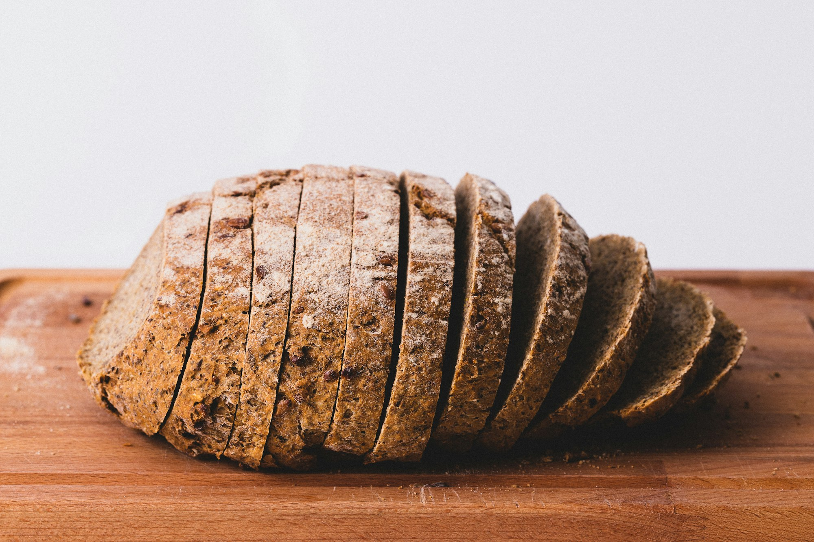
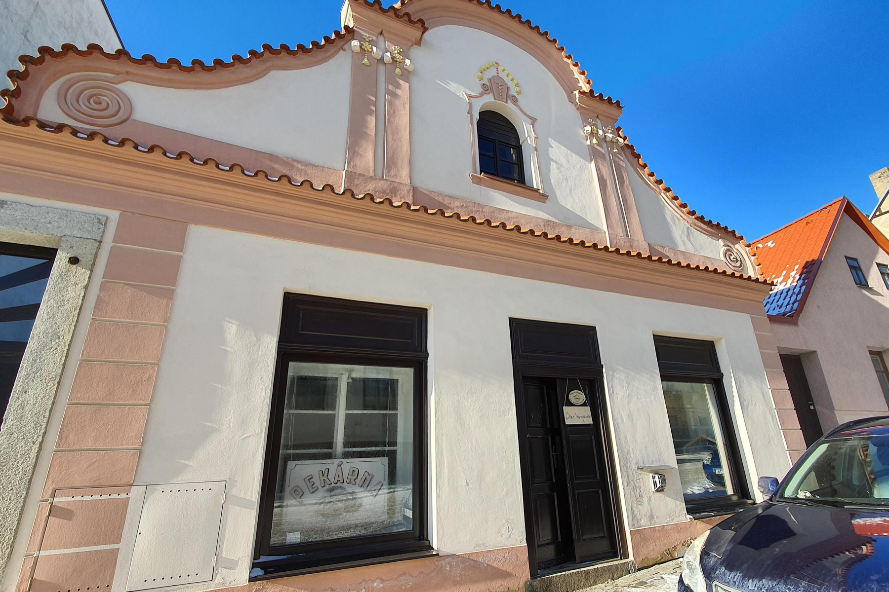
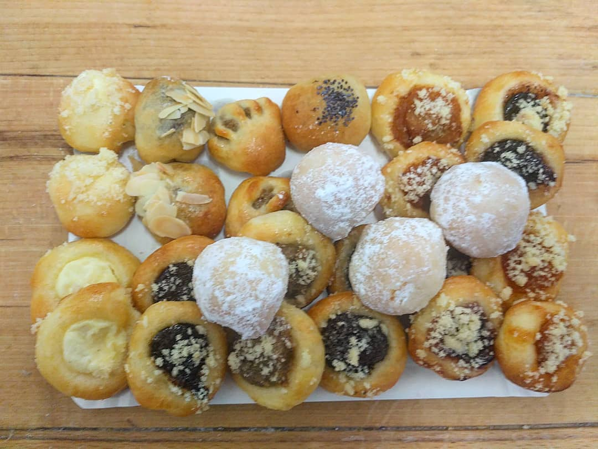
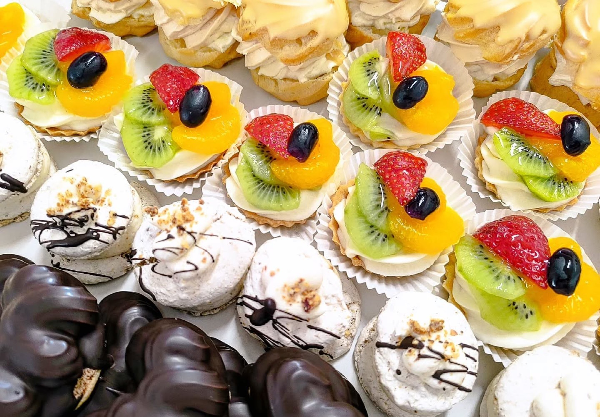
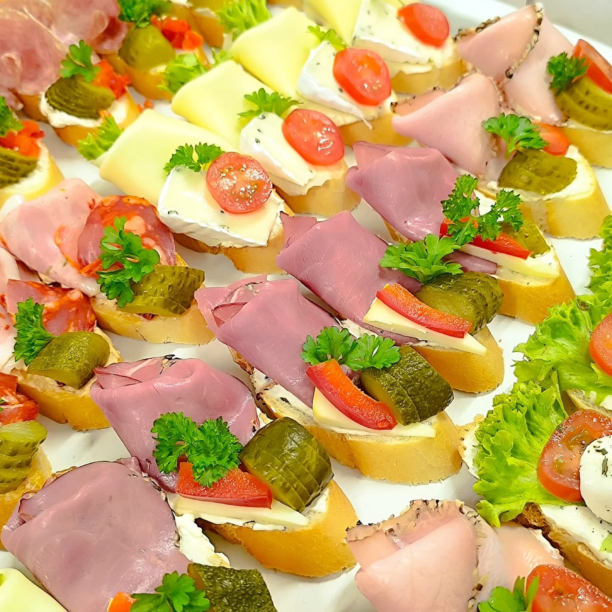
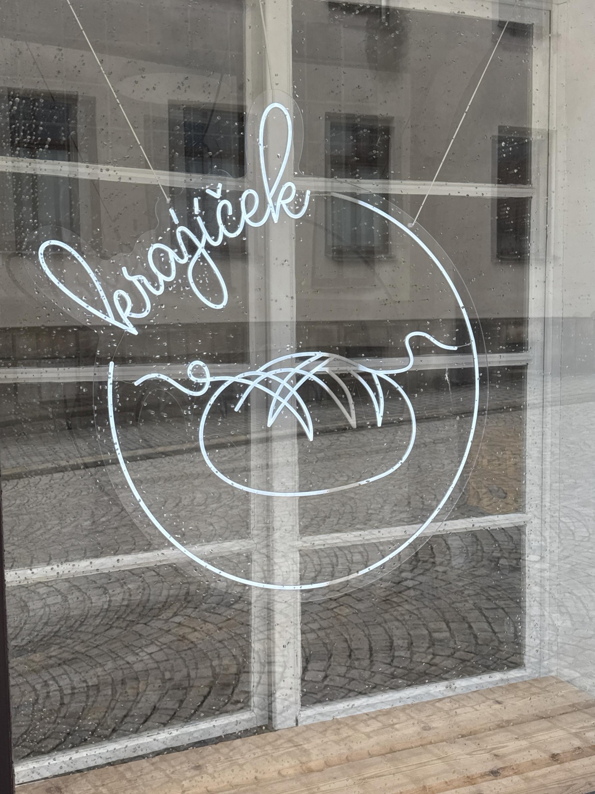

Žitný i pšeničný, s křupavou kůrkou a vláčnou střídou. Krajíc, který voní domovem.
Řemeslná pekárna v srdci Počátek. Chléb, koláčky i dorty pečeme ručně a poctivě — z dobrých surovin, bez zbytečností.
Horní 45, Počátky · st–so čerstvě napečeno

O pekárně
V barokním domku s vlnitým štítem na Horní ulici to voní už od časného rána. Těsto necháváme zrát tak dlouho, jak potřebuje, koláčky plníme podle rodinných receptů a chleba krájíme ještě teplý.
Žádná velkovýroba — jen ruce, mouka, kvásek a trpělivost. Přesně tak, jak se u nás v Počátkách peklo odjakživa.
Co pečeme
Nabídka se mění podle sezóny i nálady pekařky. Nejjistější je přijít ráno — po obědě už bývají police poloprázdné.

Žitný i pšeničný, s křupavou kůrkou a vláčnou střídou. Krajíc, který voní domovem.

Tvaroh, mák, povidla, ořechy. Malé, jemné — jedním to nikdy nekončí.

Věnečky, laskonky, ovocné košíčky. Klasika z poctivého krému, žádné náhražky.

Slavnostní mísy na oslavy, večírky i smuteční hostiny. Domluvte se s námi předem.
Na zakázku
Svatba, narozeniny, křtiny nebo jen chuť udělat někomu radost? Napečeme přesně podle vás — stačí zavolat pár dní dopředu.
